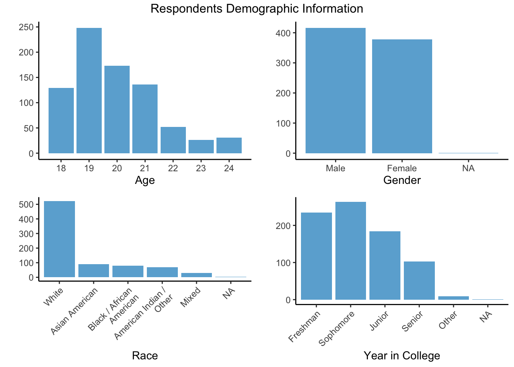
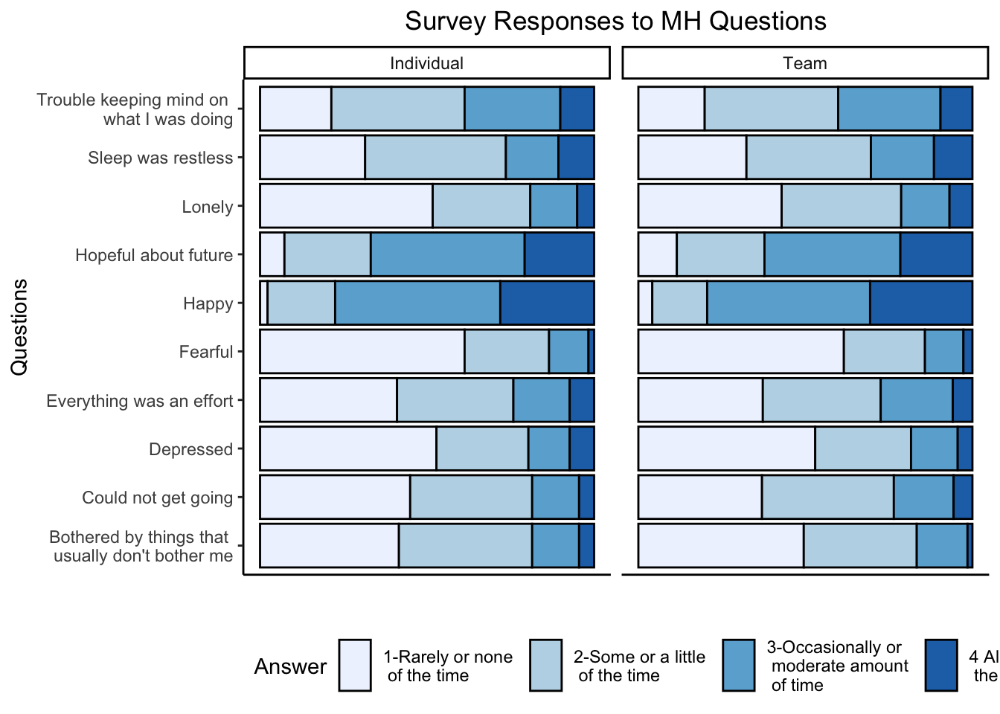
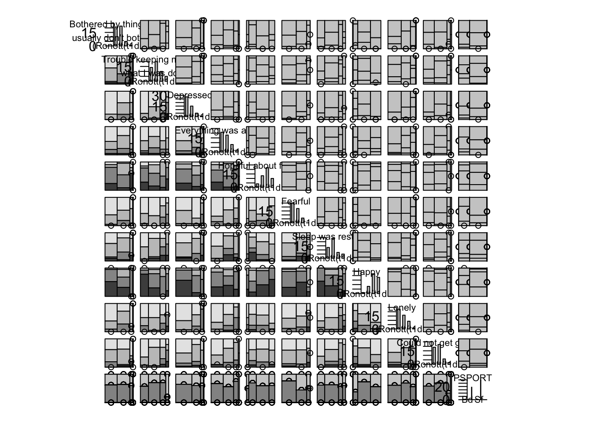
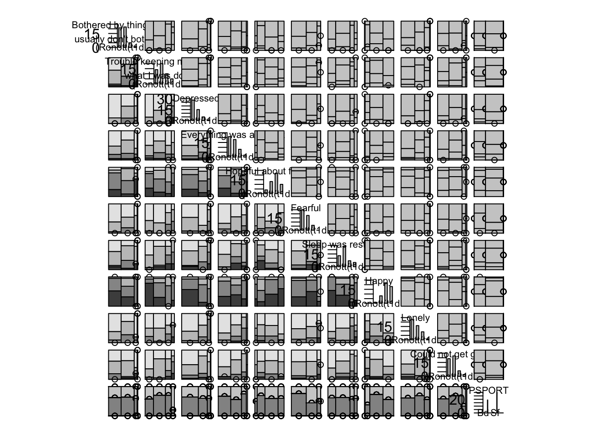

Chapter 5 Results
5.1 Who took this survey?

Students who took part in this survey are within the age range of College Students as is expected. Some older students who participated in the study may include graduate students and some students who started college later than their peers or are taking extra time to finish. The breakdown between men and women is fairly evenly split, which is nice to see. The majority of respondents were white, which may lead to some biases in responses, particularly because mental health is known to have strong correlations with economic status and race. However, when you consider this is a survey given to students at Northeastern University, a private university in Boston, in 2006 it could be feasible that this breakdown represented the student population at that time, especially for athletes and those interested in sports. Lastly, we see from the demographics that we have a majority of underclassmen who took the survey (Freshman, Sophomore) which may also lead to biased results as the stresses of college, adult life, and a persons relationship to sport likely change between Freshman and Senior years of college.
Now that we know a little bit about the demographics of respondents, lets take a look at what sports they participated in:

Students selected a wide variety of sports as their Primary Sport. Each student was only able to elect one sport, however we are not displaying those who did not select any sport as we will only be looking at students with a primary sport. We see that the most popular sports are Basketball, Soccer, Football and Baseball. ….
5.2 Investigating Mental Health Responses

Add discussion of graph here. Transition to self made scores to see if MH correlates with any other behaviors
5.3 Investigating Sport Motivation, Perspectives on Success, Behavior Patterns, and Mental Health for All Athletes
In effort to assess how factors related to sports and sport performance are related to an athletes mental health, we gave all respondents the following scores based on their responses to the survey questions:
Mental Health Score – Mental Health questions were posed in the following manner:
"Below is a list of some of the ways you may have felt or behaved recently. Please indicate how often you have felt this way during the past week."Based on the feeling, we assigned scores that were positive to indicate positive mental health outlook versus negative scores to indicate a negative outlook on mental health. For example, if a respondent answered “I was happy” with “All of the time” they would get +2 points, versus a response of “Rarely or None of the Time” would get -2 points.….

Discuss how sports appear in various scoring, check correlation between scores.


5.4 Observations:
Mental Health Scores as we have defined them are not strongly correlated for Individual Athletes with feelings about athletic success scores, motivation for participating in sports scores, or propensity for risk scores (correlation scores are close to zero, denoting no correlation). At first, this seems surprising, however after some thought you will realize that Individual Athletes are quite varied because they are competing individually! There are some athletes who compete individually who are very self-centered and ego focused (low success score) while some may have a much more hardworking attitude about their sport where they view their success as
However, for Team athletes, there is a moderate correlation between mental health and feelings about athletic success, as well as between mental health and motivation for participation in sports scores (~.5 correlation). This is interpreted as an increase in positive outlook (high MH score) being loosely positively correlated with feelings about athletic success due to hard work. In the other direction, a negative outlook on mental health is loosely correlated with athletic success coming from an ego-centric view.
….
Transition to looking at Track and Dance only.
 
